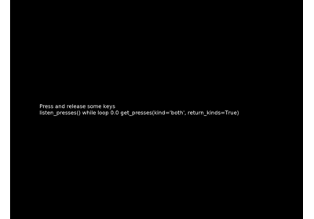
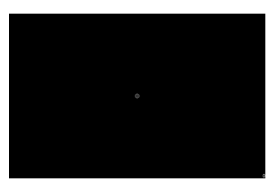
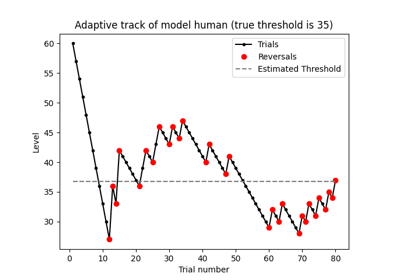

Examples¶
Some basic and advanced examples of how to use expyfun to generate and show stimuli, as well as do some analyses and plots.
Basic examples¶
Run a very basic experiment


Analysis examples¶
Examples of how to analyze data.


Experiments¶
More specialized experiment code and examples.



KeyPressAndRelease demo
Adaptive tracking for two trial types and tracker reconstruction from .tab
Adaptive tracking for two trial types and tracker reconstruction from .tab

Use joystick controls


Stimulus generation examples¶
Examples of how to generate stimuli for experiments.



Do an adaptive track staircase
Do an adaptive track staircase


Synchronization tests¶
Specialized code to test system audio, video, and trigger synchronization/jitter, as well as sample rates.